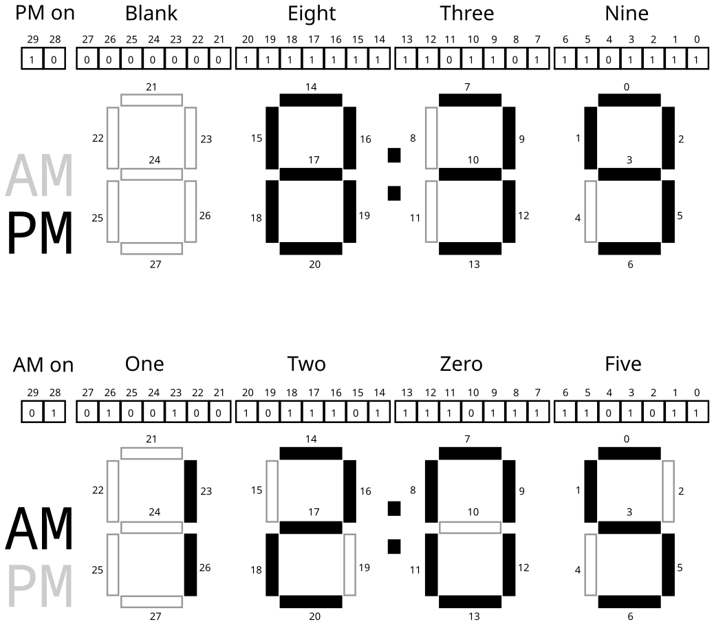

CMSC216 Project 2: Bit Ops, Debugging, Data Structures
- Due: 11:59pm Fri 14-Mar-2025
- Approximately 4.0% of total grade
- Submit to Gradescope
- Projects are individual work: no collaboration with other students is allowed. Seek help from course staff if you get stuck for too long.
CODE/TEST DISTRIBUTION: p2-code.zip
VIDEO OVERVIEW: https://youtu.be/xAHOlPjnkZs
CHANGELOG:
1 Introduction
This project addresses more advanced C programming topics each in its own problem.
- Bit-level operations are common in C and systems programming. This assignment features a problem in which shifting and bitwise AND/OR-ing are required to complete the requirements.
- Debugging is also a critical skill enabled by the debugger. The
second problem in the assignment makes use of the GNU Debugger,
gdb, to work through a puzzle program requiring specific inputs to pass its "phases". - Data structures pervade computing and getting some practice with them in C will improve one's skill at pointers and memory usage while also giving a great appreciation for garbage collected languages. A basic "map" application which maps keys to values is implemented that is backed by a binary search tree.
Difficulty Notice*
Past students have found this content to be more challenging than Project 1.
If you were pressed for time to finish Project 1, start this project as early as possible. Most students have found the first two problems (bit manipulations and debugging) only mildly challenging but run out of time on the larger third problem.
You have been warned.
2 Download Code and Setup
Download the code pack linked at the top of the page. Unzip this which will create a project folder. Create new files in this folder. Ultimately you will re-zip this folder to submit it.
| File | State | Notes |
|---|---|---|
clock_update.c |
CREATE | Create this file and write required function in it to complete Problem 1 |
clock.h |
Provided | Problem 1 header file |
clock_main.c |
Provided | Problem 1 main() function for clockmeter simulation |
clock_sim.c |
Provided | Problem 1 suppor functions to assist with simulating clock device |
test_clock_update.c |
Testing | Problem 1 function tests for clock_upate.c |
test_clock_update.org |
Testing | Problem 1 testing data file |
testy |
Testing | Problem 1 test running script |
clock_examples.sh |
Provided | Problem 1 script to produce a variety of clock examples |
puzzlebox.c |
Provided | Problem 2 Debugging problem |
input.txt |
EDIT | Problem 2 Input for puzzlebox, fill this in |
hashset.h |
Provided | Problem 3 header file |
hashset_funcs.c |
CREATE | Problem 3 functions to write |
hashset_main.c |
CREATE | Problem 3 main function to write |
data/hashset_demo.script |
Data | Problem 3 sample input scripts to main program |
data/alphabet.script |
Data | |
data/rm.hashset |
Data | Problem 3 sample hash set save files |
data/alphabet.hashset |
Data | |
data/alphabet_expand.hashset |
Data | |
test_hashmap.org |
Testing | Problem 3 tests |
Makefile |
Provided | Build file to compile all programs |
testy |
Testing | Test running script |
Makefile
As in the first assignment, a Makefile is provided as part of this
project. The essential targets pertinent to each problem are described
in those sections. The Makefile is equipped with a brief help
listing:
>> make help Typical usage is: > make # build all programs > make clean # remove all compiled items > make zip # create a zip file for submission > make prob1 # built targets associated with problem 1 > make test # run all tests > make test-prob2 # run test for problem 2 > make test-prob2 testnum=5 # run problem 2 test #5 only > make update # download and install any updates to project files
Automated Tests
As in previous assignments, automated tests are provided and associated with problems. Each problem describes how to run tests associated with it. Generally this is done as before:
>> make test-prob1 gcc -Wall -Wno-comment -Werror -g -c clock_main.c gcc -Wall -Wno-comment -Werror -g -c clock_update.c ... ./testy -o md test_clock_update.org =========================================================================== == test_clock_update.org : Problem 1 test_clock_update and clock_main tests == Running 40 / 40 tests 1) set_tod_from_ports check-initialized-set : ok 2) set_tod_from_ports midnight-set : ok 3) set_tod_from_ports after-midnight-set : ok ... >> make test-prob2 # run "tests" associated with problem 2 ... >> ./puzzlebox input.txt # same as above: run puzzlebox to test answers
3 Problem 1: Digital Clock Simulation
3.1 Overview
You are tasked with writing code which will be run by a microcontroller in a digital clock. The hardware has the following relevant features.
- An internal clock that increments 16 time per second. The value reported by the clock is stored in a special hardware location that is presented as a global variable.
- A digital display with a control port; setting certain global variable will change the display to show information to a user of the clock.
- User code that you will need to write to update the display based on the value reported by the internal clock.
- A simulator program with
Makefileto test your code
Each feature is discussed in subsequent sections.
Time of Day Register
A special register is periodically updated to contain an integer that reflects how much time has passed since the beginning of the day. This special hardware location is accessible in C programs via a global variable:
extern int CLOCK_TIME_PORT; // Time of day in units of 1/16th of a second. Tied to a hardware // clock that automatically increments it 16 times per second starting // at midnight. The simulatator provides a C global variable to // emulate this part of the hardware. This variable is present when // #include "clock.h" is used and should not be declared in any user // code.
You do not need to define this variable as it is already there. You do not need to set this variable as it is automatically changed by the hardware. Instead, you will need to access its value to determine various aspects of the current time relevant to display.
- Calculate the total number of seconds since midnight and round this up if 8/16th or more of a second has passed. This can be done using bit shift and mask operations due to the power of 2 involved.
- Whether it is AM or PM (AM is hours 12midnight to 11:59am, PM if 12noon to 11:59pm)
- The hour of the day (12-hour format so this is 1-12)
- The ones and tens digits in the hour (blank or 1 for tens, 0-9 for ones)
- The time in minutes (0-59)
- The ones and tens digits in the minutes (0-5 for tens, 0-9 for ones)
Clock Display Port Register
A special register controls the display of the LCD clock. This register is accessible in C programs via a global variable.
extern int CLOCK_DISPLAY_PORT; // Global variable used to control the LCD display on the // clock. Making changes to this variable will change the clock // time. Type ensures 32 bits.
Your code can examine the current values of the register but this is not relevant to the present problem. More importantly you will need to set the bits of this variable to properly show the time.
3.2 Diagrams of Digits
The following diagram shows bit patterns for various digits and how
they will be displayed in the ones digit of the minutes place.
Digits are displayed by darkening certain bars in the display which
correspond to certain bits in the CLOCK_DISPLAY_PORT register being
set.

Figure 1: Bit to clock display bar correspondence for the ones digit of the minute. The 0th bit controls the upper horizontal bar, the 1th bit controls the horizontal bar counter-clockwise from it, and so on around the 6 outer bars in a counter-clockwise fashion. The 6th bit controls the middle horizontal bar. When a bit is 1 (set), the bar will be darkened while when the bit is 0 (clear) the bar will not be displayed (shown as empty). The combinations of bits shown are the only ones that arise when showing digits for times.
Notice the following.
- Bits that are set (equal to 1) will turn on (darken) one bar of the clock digit
- Bits that are clear (equal to 0) will turn off one bar of the digit
- 7 bits are required to control the display of one digit
- The bits are arranged with the low order bit (bit 0) at the top and
progress counter-clockwise around the digit.
- Bit 0 top
- Bit 1 upper left
- Bit 2 upper right
- Bit 3 middle
- Bit 4 lower left
- Bit 5 lower right
- Bit 6 bottom
- The programmer can set bits to any pattern which will be displayed but only patterns shown in the figure correspond to digits of interest.
3.3 Diagram of Time Display
Time is displayed with several adjacent digits along with an AM/PM
display. The diagram below shows two full times along with the bits
representing the digits. The bits correspond to how the global
variable CLOCK_DISPLAY_PORT should be set in order to make the clock
appear as it does.

Figure 2: Two full examples of how the 30 bits of the clock display state control which parts of the clock are shown. Each digit follows the same pattern of bit to bar correspondence as the right-most with bits. The lowest order (rightmost) bit controls the top bar of each digit and proceed around the outside counter-clockwise with the final bit for each digit controlling the middle bar. The highest order bits (28 and 29) control whether the "AM" or "PM" lights are shown. Note that both could be shown at the same time or neither shown but this should not be done for actual times.
Notice the following.
- You may presume that the
CLOCK_DISPLAY_PORTregister is a 32-bit integer. - 30 bits are used to control the full clock display.
- Bits 0-6 control the ones place of the minutes
- Bits 7-13 control the tens place of the minutes
- Bits 14-20 control the ones place of the hours
- Bits 21-27 control the tens place of the hours
- Bit 28 controls whether AM is displayed
- Bit 29 controls whether PM is displayed
- Bits 30 and 31 are not used and should always be 0.
3.4 clock_update.c: Updating the Display with User Code
Periodically the microcontroller will run code to adjust the LCD display for the clock to show the current time. This function is called:
clock_update()
and it will be your job to write this function.
Rather than write everything that needs to be done within
clock_update(), several helper functions will be used to divide this
task into several more manageable and testable chunks.
These should all be written in clock_update.c and are as follows.
Converting time of Day in Seconds to a Struct
int set_tod_from_ports(tod_t *tod); // Reads the time of day from the CLOCK_TIME_PORT global variable. If // the port's value is invalid (negative or larger than 16 times the // number of seconds in a day) does nothing to tod and returns 1 to // indicate an error. Otherwise, this function uses the port value to // calculate the number of seconds from start of day (port value is // 16*number of seconds from midnight). Rounds seconds up if there at // least 8/16 have passed. Uses shifts and masks for this calculation // to be efficient. Then uses division on the seconds since the // begining of the day to calculate the time of day broken into hours, // minutes, seconds, and sets the AM/PM designation with 1 for AM and // 2 for PM. By the end, all fields of the `tod` struct are filled in // and 0 is returned for success. // // CONSTRAINT: Uses only integer operations. No floating point // operations are used as the target machine does not have a FPU. // // CONSTRAINT: Limit the complexity of code as much as possible. Do // not use deeply nested conditional structures. Seek to make the code // as short, and simple as possible. Code longer than 40 lines may be // penalized for complexity.
This function works with the struct tod_t defined in clock.h which
has the following layout.
// Breaks time down into 12-hour format
typedef struct{
int day_secs; // seconds from start of day
short time_secs; // seconds in current hour
short time_mins; // minutes in current hour
short time_hours; // current hour of day
char ampm; // 1 for am, 2 for pm
} tod_t;
Calculating day_secs should be done using bitwise operations: shifts
and logical operations. Once the day_secs has been determined, the
process of filling in values is simply a matter of doing some
division/modulo and assigning field values.
HINT: Review the correspondence between right shift operations and division and note that any bits shifted off would be the remainder of a division.
Setting bits in an integer according to a tod_t
int set_display_from_tod(tod_t tod, int *display); // Accepts a tod and alters the bits in the int pointed at by display // to reflect how the LCD clock should appear. If any time_** fields // of tod are negative or too large (e.g. bigger than 12 for hours, // bigger than 59 for min/sec) or if the AM/PM is not 1 or 2, no // change is made to display and 1 is returned to indicate an // error. The display pattern is constructed via shifting bit patterns // representing digits and using logical operations to combine them. // May make use of an array of bit masks corresponding to the pattern // for each digit of the clock to make the task easier. Returns 0 to // indicate success. This function DOES NOT modify any global // variables // // CONSTRAINT: Limit the complexity of code as much as possible. Do // not use deeply nested conditional structures. Seek to make the code // as short, and simple as possible. Code longer than 85 lines may be // penalized for complexity.
This function will need to do bit shifting along with bitwise operations to construct the correct bit patter for the clock display.
A good trick to use is to create a series of bit patterns that
correspond to the various digits. For example, according to the
diagrams above, the bit pattern for 9 is 0b1101111. If a 9
should appear on the clock somewhere, this bit pattern should be
shifted and combined with the existing bits in display so that a 9
will show. Creating similar constant mask patterns for each digit
and AM/PM is a good way to simplify this problem.
A detailed explanation of one approach to the problem:
- Create an array of bit masks for each of the digits 0-9. The 0th
element of the array contains a bit mask like
0b1110111which represents the bits that should be set for a 0 digit, the 1th element of this array has a mask like0b0100100which are the bits to be set for a 1. There should be ten entries in this array in indices 0-9. - Use modulo to determine the integer value for the ones and tens
digits for both hours and minutes. Call these variables something
like
min_onesandmin_tensand similarly for hours. Each variable should be in the range 0-9. - Start with a state variable of 0 (all 0 bits).
- Use
min_onesto index into your array of masks to determine the bits that should be set for it. Combine the state variable withmin_onesmask. - Combining bits here is a logical operation of setting all bits that are one in the mask to 1 in the state variable.
- Use
min_tensto index into your array of masks for the right mask for that digit. The bits corresponding to the tens place of the minutes is shifted to the left by 7 bits so shift the mask to the left and combine it with the state variable. - Repeat this process for the ones digit of the hours (shifted by 14 to the left) and the tens digit of the hour (shifted by 21).
- The tens digit of the hour is special in that it should be either 1 or blank (don't show a 0 for hours 1-9) so adjust your mask appropriately before shifting.
- Set the 28th bit of the state if the time is in the AM or the 29th bit if time is in the PM.
- The state variable should now be populated.
Changing the clock display
int clock_update(); // Examines the CLOCK_TIME_PORT global variable to determine hour, // minute, and am/pm. Sets the global variable CLOCK_DISPLAY_PORT bits // to show the proper time. If CLOCK_TIME_PORT appears to be in error // (to large/small) makes no change to CLOCK_DISPLAY_PORT and returns 1 // to indicate an error. Otherwise returns 0 to indicate success. // // Makes use of the previous two functions: set_tod_from_ports() and // set_display_from_tod(). // // CONSTRAINT: Does not allocate any heap memory as malloc() is NOT // available on the target microcontroller. Uses stack and global // memory only.
This function makes use of the previous two functions and the global variables that correspond to the clock hardware to alter the display. It should be relatively short by making use of the previous functions.
3.5 Clock Simulator
While we do not have actual hardware with the features mentioned, a
simulator for the clock system is in the provided files clock_main.c
and clock_sim.c. You do not need to modify or understand code in
either file to complete the HW though it will certainly expand you C
skills to spend some time examining them.
The main() function in clock_main.c accepts a command line argument
which is a number of seconds since the beginning of the day and will
call your functions for this problem and show results for it. You are
encouraged to use this function to test your code incrementally
- Examine whether
set_tod_from_ports()is correct based on the first part of output inclock_main.c - Once
set_tod_from_ports()is complete, examine whether the output ofset_display_from_tod()is correct based on the latter part of the output. - Once both these functions are correct, examine whether
cock_update()is correct based on the final part of the output of themain()function.
Note that there are a variety of functions in the file clock_sim.c
which are used to simulate how the clock will display. This is also
where the global variables CLOCK_DISPLAY_PORT and TIME_OF_DAY_SEC
are defined. However, you do not need to modify or even understand
the code in clock_sim.c. It is only used to show how the clock would
look when the CLOCK_DISPLAY_PORT bits are set.
3.6 Sample Runs of clock_main
You can build the clock_main executable via
> make OR > make clock_main
Below are samples generated by compiling and running the main()
function in the clock_main.c file. The code is compiled by using the
provided Makefile to create the clock_main program. It compiles the
clock_sim.c library along with the functions you write in the file
clock_update.c and the main() in clock_main.c.
> make clock_main
make: 'clock_main' is up to date.
> ./clock_main 0
CLOCK_TIME_PORT set to: 0
result = set_tod_from_ports( &tod );
result: 0
tod = {
.day_secs = 0
.time_hours = 12
.time_mins = 0
.time_secs = 0
.ampm = 1
}
Simulated time is: 12 : 00 : 00 am
result = set_display_from_tod(tod, &display);
result: 0
display is
bits: 00 01 0100100 1011101 1110111 1110111
index: 30 28 21 14 7 0
result = clock_update();
result: 0
CLOCK_DISPLAY_PORT is
bits: 00 01 0100100 1011101 1110111 1110111
index: 30 28 21 14 7 0
Clock Display:
# #### #### ####
# # # # # #
# # o # # # #
# #### # # # #
# # o # # # #
# # # # # # AM
# #### #### ####
> ./clock_main 16
CLOCK_TIME_PORT set to: 16
result = set_tod_from_ports( &tod );
result: 0
tod = {
.day_secs = 1
.time_hours = 12
.time_mins = 0
.time_secs = 1
.ampm = 1
}
Simulated time is: 12 : 00 : 01 am
result = set_display_from_tod(tod, &display);
result: 0
display is
bits: 00 01 0100100 1011101 1110111 1110111
index: 30 28 21 14 7 0
result = clock_update();
result: 0
CLOCK_DISPLAY_PORT is
bits: 00 01 0100100 1011101 1110111 1110111
index: 30 28 21 14 7 0
Clock Display:
# #### #### ####
# # # # # #
# # o # # # #
# #### # # # #
# # o # # # #
# # # # # # AM
# #### #### ####
> ./clock_main 89
CLOCK_TIME_PORT set to: 89
result = set_tod_from_ports( &tod );
result: 0
tod = {
.day_secs = 6
.time_hours = 12
.time_mins = 0
.time_secs = 6
.ampm = 1
}
Simulated time is: 12 : 00 : 06 am
result = set_display_from_tod(tod, &display);
result: 0
display is
bits: 00 01 0100100 1011101 1110111 1110111
index: 30 28 21 14 7 0
result = clock_update();
result: 0
CLOCK_DISPLAY_PORT is
bits: 00 01 0100100 1011101 1110111 1110111
index: 30 28 21 14 7 0
Clock Display:
# #### #### ####
# # # # # #
# # o # # # #
# #### # # # #
# # o # # # #
# # # # # # AM
# #### #### ####
> ./clock_main 961
CLOCK_TIME_PORT set to: 961
result = set_tod_from_ports( &tod );
result: 0
tod = {
.day_secs = 60
.time_hours = 12
.time_mins = 1
.time_secs = 0
.ampm = 1
}
Simulated time is: 12 : 01 : 00 am
result = set_display_from_tod(tod, &display);
result: 0
display is
bits: 00 01 0100100 1011101 1110111 0100100
index: 30 28 21 14 7 0
result = clock_update();
result: 0
CLOCK_DISPLAY_PORT is
bits: 00 01 0100100 1011101 1110111 0100100
index: 30 28 21 14 7 0
Clock Display:
# #### #### #
# # # # #
# # o # # #
# #### # # #
# # o # # #
# # # # # AM
# #### #### #
> ./clock_main 72115
CLOCK_TIME_PORT set to: 72115
result = set_tod_from_ports( &tod );
result: 0
tod = {
.day_secs = 4507
.time_hours = 1
.time_mins = 15
.time_secs = 7
.ampm = 1
}
Simulated time is: 01 : 15 : 07 am
result = set_display_from_tod(tod, &display);
result: 0
display is
bits: 00 01 0000000 0100100 0100100 1101011
index: 30 28 21 14 7 0
result = clock_update();
result: 0
CLOCK_DISPLAY_PORT is
bits: 00 01 0000000 0100100 0100100 1101011
index: 30 28 21 14 7 0
Clock Display:
# # ####
# # #
# o # #
# # ####
# o # #
# # # AM
# # ####
> ./clock_main 612199
CLOCK_TIME_PORT set to: 612199
result = set_tod_from_ports( &tod );
result: 0
tod = {
.day_secs = 38262
.time_hours = 10
.time_mins = 37
.time_secs = 42
.ampm = 1
}
Simulated time is: 10 : 37 : 42 am
result = set_display_from_tod(tod, &display);
result: 0
display is
bits: 00 01 0100100 1110111 1101101 0100101
index: 30 28 21 14 7 0
result = clock_update();
result: 0
CLOCK_DISPLAY_PORT is
bits: 00 01 0100100 1110111 1101101 0100101
index: 30 28 21 14 7 0
Clock Display:
# #### #### ####
# # # # #
# # # o # #
# # # #### #
# # # o # #
# # # # # AM
# #### #### #
> ./clock_main 691191
CLOCK_TIME_PORT set to: 691191
result = set_tod_from_ports( &tod );
result: 0
tod = {
.day_secs = 43199
.time_hours = 11
.time_mins = 59
.time_secs = 59
.ampm = 1
}
Simulated time is: 11 : 59 : 59 am
result = set_display_from_tod(tod, &display);
result: 0
display is
bits: 00 01 0100100 0100100 1101011 1101111
index: 30 28 21 14 7 0
result = clock_update();
result: 0
CLOCK_DISPLAY_PORT is
bits: 00 01 0100100 0100100 1101011 1101111
index: 30 28 21 14 7 0
Clock Display:
# # #### ####
# # # # #
# # o # # #
# # #### ####
# # o # #
# # # # AM
# # #### ####
> ./clock_main 691196
CLOCK_TIME_PORT set to: 691196
result = set_tod_from_ports( &tod );
result: 0
tod = {
.day_secs = 43200
.time_hours = 12
.time_mins = 0
.time_secs = 0
.ampm = 2
}
Simulated time is: 12 : 00 : 00 pm
result = set_display_from_tod(tod, &display);
result: 0
display is
bits: 00 10 0100100 1011101 1110111 1110111
index: 30 28 21 14 7 0
result = clock_update();
result: 0
CLOCK_DISPLAY_PORT is
bits: 00 10 0100100 1011101 1110111 1110111
index: 30 28 21 14 7 0
Clock Display:
# #### #### ####
# # # # # #
# # o # # # #
# #### # # # #
# # o # # # #
# # # # # #
# #### #### #### PM
> ./clock_main 852045
CLOCK_TIME_PORT set to: 852045
result = set_tod_from_ports( &tod );
result: 0
tod = {
.day_secs = 53253
.time_hours = 2
.time_mins = 47
.time_secs = 33
.ampm = 2
}
Simulated time is: 02 : 47 : 33 pm
result = set_display_from_tod(tod, &display);
result: 0
display is
bits: 00 10 0000000 1011101 0101110 0100101
index: 30 28 21 14 7 0
result = clock_update();
result: 0
CLOCK_DISPLAY_PORT is
bits: 00 10 0000000 1011101 0101110 0100101
index: 30 28 21 14 7 0
Clock Display:
#### # # ####
# # # #
# o # # #
#### #### #
# o # #
# # #
#### # # PM
> ./clock_main 1037010
CLOCK_TIME_PORT set to: 1037010
result = set_tod_from_ports( &tod );
result: 0
tod = {
.day_secs = 64813
.time_hours = 6
.time_mins = 0
.time_secs = 13
.ampm = 2
}
Simulated time is: 06 : 00 : 13 pm
result = set_display_from_tod(tod, &display);
result: 0
display is
bits: 00 10 0000000 1111011 1110111 1110111
index: 30 28 21 14 7 0
result = clock_update();
result: 0
CLOCK_DISPLAY_PORT is
bits: 00 10 0000000 1111011 1110111 1110111
index: 30 28 21 14 7 0
Clock Display:
#### #### ####
# # # # #
# o # # # #
#### # # # #
# # o # # # #
# # # # # #
#### #### #### PM
> ./clock_main 1368626
CLOCK_TIME_PORT set to: 1368626
result = set_tod_from_ports( &tod );
result: 0
tod = {
.day_secs = 85539
.time_hours = 11
.time_mins = 45
.time_secs = 39
.ampm = 2
}
Simulated time is: 11 : 45 : 39 pm
result = set_display_from_tod(tod, &display);
result: 0
display is
bits: 00 10 0100100 0100100 0101110 1101011
index: 30 28 21 14 7 0
result = clock_update();
result: 0
CLOCK_DISPLAY_PORT is
bits: 00 10 0100100 0100100 0101110 1101011
index: 30 28 21 14 7 0
Clock Display:
# # # # ####
# # # # #
# # o # # #
# # #### ####
# # o # #
# # # #
# # # #### PM
> ./clock_main 1382386
CLOCK_TIME_PORT set to: 1382386
result = set_tod_from_ports( &tod );
result: 0
tod = {
.day_secs = 86399
.time_hours = 11
.time_mins = 59
.time_secs = 59
.ampm = 2
}
Simulated time is: 11 : 59 : 59 pm
result = set_display_from_tod(tod, &display);
result: 0
display is
bits: 00 10 0100100 0100100 1101011 1101111
index: 30 28 21 14 7 0
result = clock_update();
result: 0
CLOCK_DISPLAY_PORT is
bits: 00 10 0100100 0100100 1101011 1101111
index: 30 28 21 14 7 0
Clock Display:
# # #### ####
# # # # #
# # o # # #
# # #### ####
# # o # #
# # # #
# # #### #### PM
> ./clock_main 1426225
CLOCK_TIME_PORT set to: 1426225
result = set_tod_from_ports( &tod );
result: 1
failed to initialize tod; bailing
3.7 Problem 1 Grading Criteria grading 30
| Weight | Criteria |
|---|---|
| AUTOMATED TESTS | |
| 20 | make test-prob1 which uses programs test_clock_update and clock_main |
Provides 40 tests for functions in clock_update.c |
|
| 0.5 point per test passed | |
MANUAL INSPECTION of clock_update.c |
|
| 3 | set_tod_from_ports() |
| Clear effort to do error checking of out of bounds values. | |
Clear flow to how each field of tod is calculated. |
|
Correctly setting fields of tod via pointer dereference or arrow operator. |
|
| Makes use of shift / logical operations to convert port value to seconds | |
| Adherence to constraints: no floats, no float math ops, no deeply nested conditionals | |
| Concise function that is not longer than 40 lines of code, avoids complex nested conditionals and loops | |
| 5 | set_display_from_tod() |
Clear effort to do error checking for out of bounds values in tod parameter |
|
| Clear code that calculates digits to be displayed | |
| Use of bit masks corresponding to digits to be displayed | |
| Use of bitwise operators to shift bits appropriately | |
| Use of bitwise operators to combine shifted digit bits | |
Clear derference/set of the integer pointed to by the display parameter |
|
| Adherence to constraints: no floats, no math float ops, no deeply nested conditionals | |
| Concise function that is not longer than 80 lines of code, avoids complex nested conditionals and loops | |
| 2 | clock_update() |
Use of the global variables like CLOCK_DISPLAY_PORT |
|
| Does not re-define / re-declare these variables, only checks / alters their values | |
| Use of previous two functions | |
| Error checking on function return values | |
No use of malloc() |
4 Problem 2: Debugging the Puzzlebox
4.1 Overview
The file puzzlebox.c contains source code that reads inputs from a
file named on the command line. If the inputs are correct, points are
awarded. If inputs are incorrect, error messages are printed.
The puzzlebox is arranged into a series of phases each of which
has some points associated with it.
- Not all phases must be completed to get full credit but the phases must done in order.
- Each phase reads inputs from the file provided on the command line and performs calculations on them to see if they are "correct" according to various criteria
- The very first input is your internet ID like
kauf0095(first part of your UMN email address). This input is used to add randomness to the puzzle so that your answers will be different from most other students. You must you use your own internet ID.
The purpose of this problem is get familiar with using a debugger.
This is a powerful tool that pauses programs, allows internal values
to be printed and code to be stepped through line by line. It is
nearly essential to use as the code in puzzlebox is intentionally
convoluted in places. Being able to pause execution and print values
at various points make it much easier to solve the puzzles.
4.2 input.txt Input File
Name your input file input.txt and put your internet ID in it along
with some numbers like 1 2 3. Then compile and run the puzzlebox
program on it.
>> make puzzlebox # compile puzzlebox gcc -Wall -g -c puzzlebox.c gcc -Wall -g -o puzzlebox puzzlebox.o >> cat input.txt # show contents of input.txt kauf0095 1 2 3 >> puzzlebox input.txt ======================================== PROBLEM 2: Puzzlebox UserID 'KAUF0095' accepted: hash value = 1936486779 PHASE 1: A puzzle you say? Challenge accepted! Ah ah ah, you didn't say the magic word... Failure: Double debugger burger, order up! RESULTS: 0 / 30 points
This is automated with the Makefile target make test-prob2:
>> make test-prob2 # compile/run puzzlebox with input.txt gcc -Wall -g -c puzzlebox.c gcc -Wall -g -o puzzlebox puzzlebox.o puzzlebox input.txt ======================================== PROBLEM 2: Puzzlebox UserID 'KAUF0095' accepted: hash value = 1936486779 PHASE 1: A puzzle you say? Challenge accepted! Ah ah ah, you didn't say the magic word... Failure: Double debugger burger, order up! RESULTS: 0 / 30 points
These initial forays are not positive (0 / 30 points) but the real
meat of the problem is in examining the source code and determining
inputs for input.txt.
4.3 gdb The GNU Debugger
You will definitely need to use a debugger to solve the puzzlebox and
gdb is the quintessential debugger associated with our compiler
gcc. It is installed by default on all lab machines and is an easy
install on must Linux machines.
For a quick overview of GDB, here are some resources
- Quick Guide to gdb: The GNU Debugger: Page describing how
to start the debugger, a sample session using
puzzlebox, an overview of the most common commands. - CppCon 2015: Greg Law " Give me 15 minutes & I'll change your view
of GDB": Video giving basic overview of hope to run
gdbon simple programs with an emphasis on differences between "normal" mode and TUI mode - GNU GDB Debugger Command Cheat Sheet: Extensive list of commands
- Debugging with GDB: Official manual for
gdb
4.4 Typical Cycle
A typical cycle of working on puzzlebox will be the following.
Start the debugger with puzzlebox
>> gdb -tui ./puzzlebox
Set the arguments array to
input.txtset args input.txt
Set a breakpoint at a phase like
phase03break phase03
Run the program
run
Do some stepping / nexting
step next
Print some variables
print normal_val print/x val_in_hex print/t val_in_binary
- Make some changes to
input.txtin a different window Re-run the program to see if things have changed favorably
kill run
4.5 Kinds of Puzzles
The puzzles presented in the different phases make use of a variety of C program techniques which we have or will discuss including.
- Bit-wise operations and their use in place of arithmetic
- String and character array manipulations
- Interpreting bits as one of several kinds of things (integer, float, character) through pointers and unions
- More extensive C control structures like
gotoand labels
4.6 Tests for puzzlebox.c grading 30
puzzlebox.c itself reports how many points one can earn at the end
of its execution.
Currently there are 40 points available but 30 points is considered full credit.
If any additional points are earned, they will be counted as Makeup Credit for Projects to make up for credit lost on past or future projects. Your total score on All Projects cannot exceed 100% so any points beyond will simply be dropped.
Run the following command to 'test' puzzlebox:
make test-prob2
5 Problem 3: Hash Tables in C
5.1 Overview
This problem implements a rudimentary hash table application in C along with a program that uses it. The architecture is similar to a lab problem involving linked lists so reviewing that code can provide some insight.
Basic Hash Tables are covered in most introductory data structure classes such as CSCI 1913 and 1933. Should you need to review them, the following resources may prove useful.
- Wikipedia Article on Hash Tables: Provides general overview of the data structure. Specifically focus on Separate Chaining with Linked Lists which is the style of hash table implemented in the assignment.
- Youtube "Data Structures: Hash Tables" by HackerRank: Short video summarizing major concepts of hash tables in any programming language. Explains briefly hash code functions and the Separate Chaining architecture we will use.
- Youtube "How HashMap works in Java" by Ranjith Ramachandran: Short video which includes a detailed walk-through of adding elements to a separately chained hash table. Somewhat Java-centric including use of a different mapping of hash codes to array indices than we will use. Also note that they Key/Value structure used there is for a Map whereas we will use a Set where the Key/Val are identical and referred to as an Element.
Our particular variant will be a Hash Set which is a collection of elements (strings) which are each unique. The hash table is used to quickly add new elements and check whether an element is contained in the set. The hash table will use the separate chaining technique to resolve hash code conflicts: each hash "bucket" has a singly linked list of elements in that bucket.
Additionally, the hash set will maintain a record of the order elements are added by overlaying a linked list on elements as they are added. This allows for efficient traversal of the hash table elements for printing and gives a queue-like feel to parts of the table.
5.2 hashset_main Demonstration
The intent of this problem is to develop a small application which behaves as the following demo indicates.
>> make hashset_main # Compile hash table application
gcc -Wall -Wno-comment -Werror -g -c hashset_main.c
gcc -Wall -Wno-comment -Werror -g -c hashset_funcs.c
gcc -Wall -Wno-comment -Werror -g -o hashset_main hashset_main.o hashset_funcs.o
>> ./hashset_main # start application, shows help message with commands
Hashset Application
Commands:
hashcode <elem> : prints out the numeric hash code for the given key (does not change the hash set)
contains <elem> : prints the value associated with the given element or NOT PRESENT
add <elem> : inserts the given element into the hash set, reports existing element
print : prints all elements in the hash set in the order they were addded
structure : prints detailed structure of the hash set
clear : reinitializes hash set to be empty with default size
save <file> : writes the contents of the hash set to the given file
load <file> : clears the current hash set and loads the one in the given file
next_prime <int> : if <int> is prime, prints it, otherwise finds the next prime and prints it
expand : expands memory size of hash set to reduce its load factor
quit : exit the program
HS> print # prints items in order, empty initially
HS> structure # show hash table structure, empty intitially
elem_count: 0
table_size: 5
order_first: NULL
order_last : NULL
load_factor: 0.0000
[ 0] :
[ 1] :
[ 2] :
[ 3] :
[ 4] :
HS> add Rick # add items table
HS> add Morty
HS> print # show items in order added
1 Rick
2 Morty
HS> structure # show internal structure of the hash table
elem_count: 2
table_size: 5
order_first: Rick
order_last : Morty
load_factor: 0.4000
[ 0] : # some buckets are empty
[ 1] :
[ 2] :
[ 3] : {2546943 Rick >>Morty} # nodes show hash code, string stored, next string
[ 4] : {74531189 Morty >>NULL} # last item added, points to null
HS> add Summer # add more items
HS> add Jerry
HS> add Beth
HS> add Tinyrick
HS> print # print items in order added
1 Rick
2 Morty
3 Summer
4 Jerry
5 Beth
6 Tinyrick
HS> structure # show structure
elem_count: 6 # NOTE: recently added items added to front of bucket lists
table_size: 5
order_first: Rick
order_last : Tinyrick
load_factor: 1.2000
[ 0] :
[ 1] : {-1964728321 Tinyrick >>NULL}
[ 2] : {2066967 Beth >>Tinyrick}
[ 3] : {-1807340593 Summer >>Jerry} {2546943 Rick >>Morty}
[ 4] : {71462654 Jerry >>Beth} {74531189 Morty >>Summer}
HS> contains Jerry # check if items contained / not in hashset
FOUND: Jerry
HS> contains Rick
FOUND: Rick
HS> contains Unity
NOT PRESENT
HS> contains President
NOT PRESENT
HS> add Jerry # items are unique, no changes made on detecting duplicates
Elem already present, no changes made
HS> add Beth
Elem already present, no changes made
HS> save rm.hashset # save the hash table file rm.hashset, can be loaded later
HS> clear # clear the hash table
HS> print # show cleared hash table is empty now
HS> structure
elem_count: 0
table_size: 5
order_first: NULL
order_last : NULL
load_factor: 0.0000
[ 0] :
[ 1] :
[ 2] :
[ 3] :
[ 4] :
HS> add Birdperson # add new items to the empty hash table
HS> add Squanchy
HS> structure # show contents
elem_count: 2
table_size: 5
order_first: Birdperson
order_last : Squanchy
load_factor: 0.4000
[ 0] :
[ 1] :
[ 2] : {-724361712 Squanchy >>NULL}
[ 3] : {2082041198 Birdperson >>Squanchy}
[ 4] :
HS> load rm.hashset # clear current hash table and load from file
HS> structure # show contents identical to when 'save' was used
elem_count: 6
table_size: 5
order_first: Rick
order_last : Tinyrick
load_factor: 1.2000
[ 0] :
[ 1] : {-1964728321 Tinyrick >>NULL}
[ 2] : {2066967 Beth >>Tinyrick}
[ 3] : {-1807340593 Summer >>Jerry} {2546943 Rick >>Morty}
[ 4] : {71462654 Jerry >>Beth} {74531189 Morty >>Summer}
HS> expand # expand the size of the hash table's internal array
HS> print # no effect on items/ordering in table
1 Rick
2 Morty
3 Summer
4 Jerry
5 Beth
6 Tinyrick
HS> structure # show internal sturcture: larger array now
elem_count: 6
table_size: 11 # array size is next_prime(2*5+1) = 11
order_first: Rick
order_last : Tinyrick
load_factor: 0.5455
[ 0] :
[ 1] : {2066967 Beth >>Tinyrick}
[ 2] :
[ 3] : {-1807340593 Summer >>Jerry} {2546943 Rick >>Morty}
[ 4] :
[ 5] :
[ 6] : {-1964728321 Tinyrick >>NULL}
[ 7] : {74531189 Morty >>Summer}
[ 8] :
[ 9] :
[10] : {71462654 Jerry >>Beth}
HS> add Birdperson # add additional items
HS> add Squanchy
HS> add Picklerick
HS> structure # show structure again
elem_count: 9
table_size: 11
order_first: Rick
order_last : Picklerick
load_factor: 0.8182
[ 0] : {761532761 Picklerick >>NULL}
[ 1] : {2066967 Beth >>Tinyrick}
[ 2] :
[ 3] : {-1807340593 Summer >>Jerry} {2546943 Rick >>Morty}
[ 4] :
[ 5] :
[ 6] : {2082041198 Birdperson >>Squanchy} {-1964728321 Tinyrick >>Birdperson}
[ 7] : {74531189 Morty >>Summer}
[ 8] : {-724361712 Squanchy >>Picklerick}
[ 9] :
[10] : {71462654 Jerry >>Beth}
HS> expand # expand again
HS> structure # show internal structure
elem_count: 9
table_size: 23 # size is next_prime(2*11 + 1) = 23
order_first: Rick
order_last : Picklerick
load_factor: 0.3913
[ 0] :
[ 1] : {761532761 Picklerick >>NULL}
[ 2] :
[ 3] : {2066967 Beth >>Tinyrick}
[ 4] :
[ 5] :
[ 6] :
[ 7] :
[ 8] : {2082041198 Birdperson >>Squanchy}
[ 9] :
[10] :
[11] : {-724361712 Squanchy >>Picklerick} {-1964728321 Tinyrick >>Birdperson} {74531189 Morty >>Summer}
[12] :
[13] :
[14] :
[15] : {2546943 Rick >>Morty}
[16] :
[17] :
[18] : {-1807340593 Summer >>Jerry}
[19] :
[20] :
[21] : {71462654 Jerry >>Beth}
[22] :
HS> quit # exit the application
>> # back to normal shell
5.3 Diagram of Hash Set Data structures

Figure 3: Shows the structure of a hash set and the various C data structures (structs) which are involved. Details are discussed in subsequent sections.
5.4 Hash Table Data Types
We will favor separately chained hash sets which have the following features.
- A hash set stores elements (strings) allowing fast lookup based on the hash code of the element. When a programming environment provides a "set" data structure, hash tables are frequently the backing data structure.
- The hash set has a 'table' which is a fixed size array. Each array
element is a pointer to a linked list node or
NULL. - Elements in the hash table are stored in linked list nodes. Elements that hash to the same table location are stored in the list at that location
- A
hashcode()function is provided which generates an integer from a string and is the first step to determining where key/value is located. - The hash set also tracks the ordering that elements are added via additional pointers. The hash set tracks the first and last elements added allowing queue-like adds. Each node is part of a list for the table index it is stored at AND part of the overall list of all elements added in order.
Examine the header file hashset.h to see the two C structs which will
be used to represent hash tables.
// Type for linked list nodes in hash set
typedef struct hashnode {
struct hashnode *table_next; // pointer to next node at table index of this node, NULL if last node
struct hashnode *order_next; // pointer to next node in insert order, NULL if last data added
char data[128]; // string for the data stored in this node
} hsnode_t;
// Type of hash table
typedef struct {
int data_count; // number of data items (elements) in the table
int table_size; // how big is the table array
hsnode_t **table; // array of "buckets" which contain nodes
hsnode_t *order_first; // pointer to the first node that was added
hsnode_t *order_last; // pointer to last node that was added
} hashset_t;
5.5 Provided hash_code() Function
The code for hash_code() is provided below. All hash tables require
a means of converting elements into a non-unique number. For
consistency, we will use the below code which employs several
interesting C tricks that will be discussed as the course
progresses. Some of the advantages/disadvantages of the hash function
are mentioned in the comments.
// PROVIDED: Compute a simple hash code for the given character
// string. Uses a "polyomial code" which uses all characters of the
// string to form the hash code. This is the same approach that many
// standard libraries like Java's String.hashcode() function
// use. ADVANTAGE: Gives good distribution for all strings with even
// single character variations having different hash
// codes. DISADVANTAGE: computing the hash code is linear in time on
// the length of the string.
int hashcode(char key[]){
int hc = 0;
for(int i=0; key[i]!='\0'; i++){
hc = hc*31 + key[i];
}
return hc;
}
5.6 hashset_funcs.c Outline
Standard operations are supported by the hash set.
- Adding an element
- Determining if an element is contained or not in the set
- Clearing the entire hash table
- Printing all data in the hash table according to their add order
- Printing the internal layout of the hash table
- Expanding the memory used by the hash table to improve lookup performance.
These are broken down into the following C functions which you will
need to implement in hashset_funcs.c except for the first
hashcode() function which is provided.
// hashset_funcs.c: utility functions for operating on hash sets. Most
// functions are used in the hashset_main.c which provides an
// application to work with the functions.
#include "hashset.h"
// PROVIDED: Compute a simple hash code for the given character
// string. Uses a "polyomial code" which uses all characters of the
// string to form the hash code. This is the same approach that many
// standard libraries like Java's String.hashcode() function
// use. ADVANTAGE: Gives good distribution for all strings with even
// single character variations having different hash
// codes. DISADVANTAGE: computing the hash code is linear in time on
// the length of the string.
int hashcode(char key[]){
int hc = 0;
for(int i=0; key[i]!='\0'; i++){
hc = hc*31 + key[i];
}
return hc;
}
void hashset_init(hashset_t *hs, int table_size);
// Initialize the hash set 'hs' to have given size and data_count
// 0. Ensures that the 'table' field is initialized to an array of
// size 'table_size' and is filled with NULLs. Also ensures that the
// first/last pointers are initialized to NULL
int hashset_contains(hashset_t *hs, char data[]);
// Returns 1 if the parameter `data` is in the hash set and 0
// otherwise. Uses hashcode() and field `table_size` to determine
// which index in table to search. Iterates through the list at that
// table index using strcmp() to check for `data`. NOTE: The
// `hashcode()` function may return positive or negative
// values. Negative values are negated to make them positive. The
// "bucket" (index in hs->table) for `data` is determined by with
// 'hashcode(key) modulo table_size'.
int hashset_add(hashset_t *hs, char data[]);
// If the data is already present in the hash set, makes no changes
// to the hash set and returns 0. hashset_contains() may be used for
// this. Otherwise determines the bucket to add `data` at via the same
// process as in hashset_contains() and adds it to the FRONT of the
// list at that table index. Adjusts the `hs->order_last` pointer to
// append the new data to the ordered list of data. If this is the
// first data added, also adjsuts the `hs->first` pointer. Updates the
// `data_count` field and returns 1 to indicate a successful addition.
//
// NOTE: Adding data at the front of each bucket list allows much
// simplified logic that does not need any looping/iteration.
void hashset_free_fields(hashset_t *hs);
// De-allocates nodes/table for `hs`. Iterates through the ordered
// list of the hash set starting at the `order_first` field and
// de-allocates all nodes in the list. Also free's the `table`
// field. Sets all relevant fields to 0 or NULL as appropriate to
// indicate that the hash set has no more usable space. Does NOT
// attempt to de-allocate the `hs` itself as it may not be
// heap-allocated (e.g. in the stack or a global).
void hashset_show_structure(hashset_t *hs);
// Displays detailed structure of the hash set. Shows stats for the
// hash set as below including the load factor (data count divided
// by table_size) to 4 digits of accuracy. Then shows each table
// array index ("bucket") on its own line with the linked list of
// data in the bucket on the same line.
//
// EXAMPLE:
// data_count: 4
// table_size: 5
// order_first: Rick
// order_last : Tinyrick
// load_factor: 0.8000
// [ 0] : {7738144525137111380 Tinyrick >>NULL}
// [ 1] :
// [ 2] :
// [ 3] : {125779953153363 Summer >>Tinyrick} {1801677138 Rick >>Morty}
// [ 4] : {521644699469 Morty >>Summer}
//
// NOTES:
// - Uses format specifier "[%2d] : " to print the table indices
// - Nodes in buckets have the following format:
// {1415930697 IceT >>Goldenfold}
// | | |
// | | +-> order_next->data OR NULL if last node
// | +->`data` string
// +-> hashcode("IceT"), print using format "%ld" for 64-bit longs
//
void hashset_write_data_ordered(hashset_t *hs, FILE *out);
// Outputs all data in the hash set according to the order they
// were added. Starts at the `order_first` field and iterates through
// the list defined there. Each data is printed on its own line
// preceded by its add position with 1 for the first data, 2 for the
// second, etc. Prints output to `FILE *out` which should be an open
// handle. NOTE: the output can be printed to the terminal screen by
// passing in the `stdout` file handle for `out`.
void hashset_save(hashset_t *hs, char *filename);
// Writes the given hash set to the given `filename` so that it can be
// loaded later. Opens the file and writes its 'table_size' and
// 'data_count' to the file. Then uses the hashset_write_data_ordered()
// function to output all data in the hash set into the file.
// EXAMPLE FILE:
//
// 5 6
// 1 Rick
// 2 Morty
// 3 Summer
// 4 Jerry
// 5 Beth
// 6 Tinyrick
//
// First two numbers are the 'table_size' and 'data_count' field and
// remaining text is the output of hashset_write_data_ordered();
// e.g. insertion position and data.
int hashset_load(hashset_t *hs, char *filename);
// Loads a hash set file created with hashset_save(). If the file
// cannot be opened, prints the message
//
// ERROR: could not open file 'somefile.hs'
//
// and returns 0 without changing anything. Otherwise clears out the
// current hash set `hs`, initializes a new one based on the size
// present in the file, and adds all data from the file into the new
// hash set. Ignores the indices at the start of each line and uses
// hashset_add() to insert data in the order they appear in the
// file. Returns 1 on successful loading (FIXED: previously indicated
// a different return value on success) . This function does no error
// checking of the contents of the file so if they are corrupted, it
// may cause an application to crash or loop infinitely.
int next_prime(int num);
// If 'num' is a prime number, returns 'num'. Otherwise, returns the
// first prime that is larger than 'num'. Uses a simple algorithm to
// calculate primeness: check if any number between 2 and (num/2)
// divide num. If none do, it is prime. If not, tries next odd number
// above num. Loops this approach until a prime number is located and
// returns this. Used to ensure that hash table_size stays prime which
// theoretically distributes data better among the array indices
// of the table.
void hashset_expand(hashset_t *hs);
// Allocates a new, larger area of memory for the `table` field and
// re-adds all current data to it. The size of the new table is
// next_prime(2*table_size+1) which keeps the size prime. After
// allocating the new table, all table entries are initialized to NULL
// then the old table is iterated through and all data are added to
// the new table according to their hash code. The memory for the old
// table is de-allocated and the new table assigned to the hash set
// fields "table" and "table_size". This function increases
// "table_size" while keeping "data_count" the same thereby reducing
// the load of the hash table. Ensures that the memory associated with
// the old table is free()'d. Makes NO special effort to preserve old
// nodes: re-adds everything into the new table and then frees the old
// one along with its nodes. Uses functions such as hashset_init(),
// hashset_add(), hashset_free_fields() to accomplish the transfer.
5.7 hashset_main.c: main function / application
In hashset_main.c implement an interactive program which allows users
to type commands to manipulate the hash set.
The provided Makefile should compile the hashset_main program as follows.
>> make hashset_main # Compile hash table application gcc -Wall -Wno-comment -Werror -g -c hashset_main.c gcc -Wall -Wno-comment -Werror -g -c hashset_funcs.c gcc -Wall -Wno-comment -Werror -g -o hashset_main hashset_main.o hashset_funcs.o >> ./hashset_main # start application, shows help message with commands Hashset Application Commands: hashcode <data> : prints out the numeric hash code for the given key (does not change the hash set) contains <data> : prints FOUND if data is in the set NOT PRESENT otherwise add <data> : inserts the given data into the hash set, reports existing data print : prints all data in the hash set in the order they were addded structure : prints detailed structure of the hash set clear : reinitializes hash set to be empty with default size save <file> : writes the contents of the hash set to the given file load <file> : clears the current hash set and loads the one in the given file next_prime <int> : if <int> is prime, prints it, otherwise finds the next prime and prints it expand : expands memory size of hash set to reduce its load factor quit : exit the program HS>
The following sections provide some implementation details.
Read commands, Execute
The basic flow of hashset_main.c follows the same pattern that code for
a lab exercise demonstrates. A good way to get started on the main
application is to copy over the lab solution and begin modifying it.
- Create a
hashset_tvariable, likely on the stack as a local variable inmain() - Start a loop that terminates when the user exits or there is no more input
- Each time the user enters a string, read it and check for one of the built-in commands
- On identifying the command, potentially read another string if
needed (commands like
addandcontains) - Call an appropriate
hashset_XXX()function to handle the command
Supported Commands
To indicate to users of the program the supported commands, use the following code to print out the initial option list.
printf("Hashset Application\n");
printf("Commands:\n");
printf(" hashcode <data> : prints out the numeric hash code for the given key (does not change the hash set)\n");
printf(" contains <data> : prints FOUND if data is in the set NOT PRESENT otherwise\n");
printf(" add <data> : inserts the given data into the hash set, reports existing data\n");
printf(" print : prints all data in the hash set in the order they were addded\n");
printf(" structure : prints detailed structure of the hash set\n");
printf(" clear : reinitializes hash set to be empty with default size\n");
printf(" save <file> : writes the contents of the hash set to the given file\n");
printf(" load <file> : clears the current hash set and loads the one in the given file\n");
printf(" next_prime <int> : if <int> is prime, prints it, otherwise finds the next prime and prints it\n");
printf(" expand : expands memory size of hash set to reduce its load factor\n");
printf(" quit : exit the program\n");
Clearing Hash Table
When issuing the clear command, the contents of the current hash set
should be eliminated and the hash set reinitialized to the default
size. This is most easily done via.
- Using the
hashset_free_fields()function - Using
hashset_init()with theHASHSET_DEFAULT_TABLE_SIZEconstant defined inhashset.h.
Paths to Files for Saving and Loading
Saving and loading data involves writing to files. The names
associated with the files must be specified as a path so that if
files are to be saved or loaded from subdirectories, include this
as part of the path. For example, the rm.hashset file is
provided in the data/ directory and once loading functionality is
code, it can be loaded as follows.
>> ./hashset_main
...
HS> load data/rm.hashset # load existing hashset save file
HS> print
1 Rick
2 Morty
3 Summer
4 Jerry
5 Beth
6 Tinyrick
HS> structure # show structure
elem_count: 6
table_size: 5
order_first: Rick
order_last : Tinyrick
load_factor: 1.2000
[ 0] :
[ 1] : {-1964728321 Tinyrick >>NULL}
[ 2] : {2066967 Beth >>Tinyrick}
[ 3] : {-1807340593 Summer >>Jerry} {2546943 Rick >>Morty}
[ 4] : {71462654 Jerry >>Beth} {74531189 Morty >>Summer}
HS> expand # expand
HS> add Birdperson # add new items
HS> add Goldenfold
HS> save cur.hashset # save to file in current directory
HS> clear # empty hash table
HS> print # show emptiness
HS> load cur.hashset # reload
HS> print # items restored
1 Rick
2 Morty
3 Summer
4 Jerry
5 Beth
6 Tinyrick
7 Birdperson
8 Goldenfold
HS> save data/new.hashset # create another save file in data/ dir
Failing to Load Files
If a file cannot be opened with the load 'file.hm' command, the
underlying hashset_load() should print an error of the form
ERROR: could not open file 'somefile.hm'
and the hash_main.c main loop should NOT change the hash set and
print the message
load failed
in response to the error. Below is a demonstration of this from the automated tests.
... HS> print # current contents of set 1 Rick 2 Morty 3 Summer 4 Jerry 5 Beth 6 Tinyrick 7 Birdperson 8 Goldenfold HS> load notthere.hashset # attempt to load file that doesn't exit ERROR: could not open file 'notthere.hashset' load failed HS> print # failed load does not modify current set 1 Rick 2 Morty 3 Summer 4 Jerry 5 Beth 6 Tinyrick 7 Birdperson 8 Goldenfold HS>
Command Echoing: -echo option to hashset_main
Some users may wish to "script" this the main program: allow it to process input commands from a file rather than from the user typing. This notion is discussed in a lab and should be reviewed if it is unfamiliar.
An example of an input script is in data/hashset_demo.script which
looks like a lot of user commands:
print structure add Rick add Morty print structure add Summer add Jerry add Beth add Tinyrick print structure contains Jerry contains Rick contains Unity contains President save rm.hashset clear print structure add Birdperson add Squanchy structure load rm.hashset structure expand print structure add Birdperson add Squanchy add Picklerick structure expand structure bye
The file can be fed directly to the program without needing type it using Unix pipes as per the following:
>> cat data/hashset_demo.script | ./hashset_main -echo
Notice the use of a command line argument for hashset_main: the
-echo option. This is a REQUIRED feature which prints commands typed
by users to the screen. To implement this, do the following.
Model the structure of command echoing after what is shown in related Lab work.
- Use a variable in
main()to indicate whether command echoing is on or off; set it to off by default Check when
main()starts whether command line argument 1 is set to-echoin which case turn echoing on. A condition like the following is useful.if(argc > 1 && strcmp("-echo",argv[1])==0) {- Each command should check for echoing and print the command being run along with any arguments to it. This technique is demonstrated in related lab work.
It will take some work to get the exact placement of echoes correct but will ultimately lead to nice results that involve LITTLE typing like the example below.
>> cat hashset_demo.script | hashset_main -echo Hashset Application Commands: hashcode <data> : prints out the numeric hash code for the given key (does not change the hash set) contains <data> : prints FOUND if data is in the set NOT PRESENT otherwise add <data> : inserts the given data into the hash set, reports existing data print : prints all data in the hash set in the order they were addded structure : prints detailed structure of the hash set clear : reinitializes hash set to be empty with default size save <file> : writes the contents of the hash set to the given file load <file> : clears the current hash set and loads the one in the given file next_prime <int> : if <int> is prime, prints it, otherwise finds the next prime and prints it expand : expands memory size of hash set to reduce its load factor quit : exit the program HS> print HS> structure data_count: 0 table_size: 5 order_first: NULL order_last : NULL load_factor: 0.0000 [ 0] : [ 1] : [ 2] : [ 3] : [ 4] : HS> add Rick HS> add Morty HS> print 1 Rick 2 Morty ...
5.8 Grading Criteria for Problem 3 grading 40
The following criteria will be checked in this problem.
| Weight | Criteria |
|---|---|
AUTOMATED TESTS via make test-prob3 |
|
| 20 | test_hashset.org tests |
20 tests for hashset_main executable, exercises functions in hashset_funcs.c |
|
| All tests run under Valgrind | |
| 1 point per test passed | |
Code compiles without warnings (make clean followed by make test-prob3 gives no errors/warnings) |
|
NOTE: run individual tests via make test-prob3 testnum=4 |
|
| MANUAL INSPECTION | |
| 15 | hashset_funcs.c |
| Clear commenting indicating intent during functions "calculate table index" or "iterate through list" | |
| Relatively short functions: nothing needs to be too long (50 lines tops) | |
| Clearly written iteration loops to traverse linked lists in hash table functions | |
Use of strcmp() to check data during hashset_contains() operation |
|
Use of hashset_contains() during hashset_add() to check for duplicates |
|
Concise and commented code for hashset_add() which calculates table index and inserts new node at the front the list via table_next pointers |
|
Maintains the order_first/order_last fields during add operation |
|
hashset_free_fields() frees all list nodes and the table array, assigns 0/NULL to all fields |
|
Uses the ordered list of data to easily free all nodes during hashset_free_fields() |
|
hashset_save() makes use of hashset_write() with an open file handle to avoid redundant code |
|
hashset_load() checks that files open successfully before using hashset_free_fields() to de-allocate memory |
|
| File closed after finished during saving and loading | |
next_prime() is clearly written and easy to follow; follows the algorithm described in the function documentation |
|
hashset_expand() uses other functions in such as next_prime(), hashset_add() and hashset_free_fields() to avoid repeating code. |
|
| 5 | hashset_main.c |
Comments indicating what high-level command is being implemented in each part of main |
|
| Clear structure of main loop, reading commands, selecting actions | |
| Use of string functions to identify which command to execute | |
Clear efforts to honor -echo option and echo commands |
|
| Clear effort to free all memory prior to exit by clearing hashset on exit |
6 Project Submission
6.1 Submit to Gradescope
Refer to the Project 1 instructions and adapt them for details of how to submit to Gradescope. In summary they are
- Type
make zipin the project directory to createp2-complete.zip - Log into Gradescope, select Project 2, and upload
p2-complete.zip
6.2 Late Policies
You may wish to review the policy on late project submission which will cost 1 Engagement Point per day late. No projects will be accepted more than 48 hours after the deadline.
https://www.cs.umd.edu/~profk/216/syllabus.html#late-submission